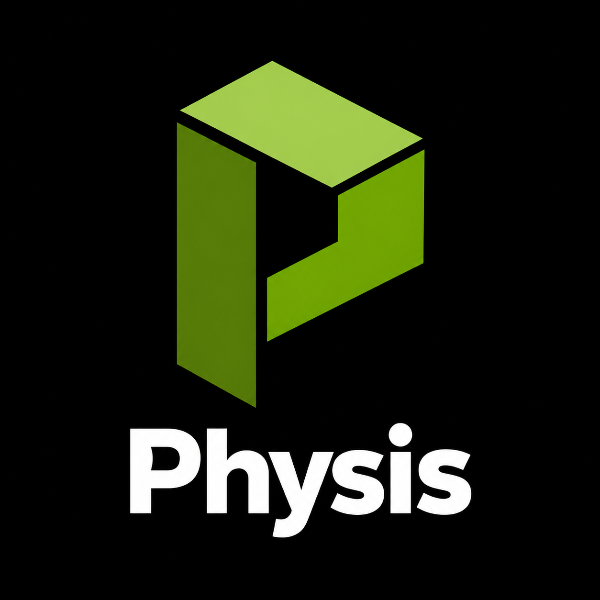
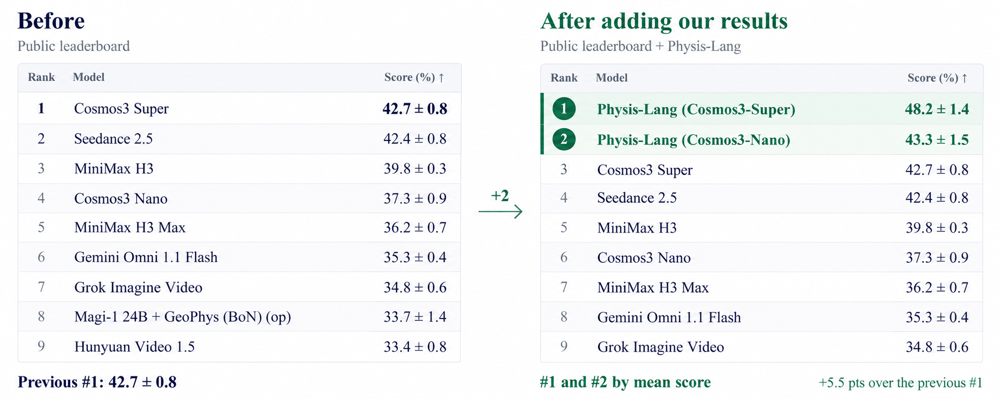
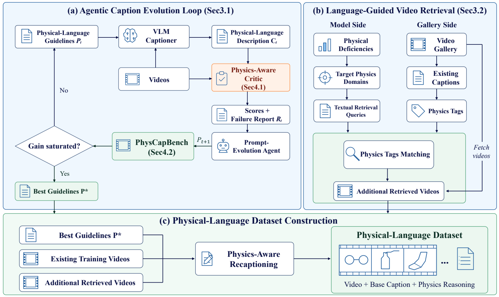

Physis-Lang · Cosmos3-Super
48.2 ± 1.4

Physis-LangRead the paper1 NVIDIA 2 MIT 3 University of Oxford † Equal contribution * Corresponding authors
Language can do more than describe a scene.
It can represent how the physical world evolves.
First and second on the public leaderboard.
48.2 ± 1.4
43.3 ± 1.5
Super improves on the previous leading score of 42.7 by 5.5 percentage points. Nano also surpasses the original Cosmos3-Super by mean score.

I2V Verified · Ranked by mean score · September 29, 2026
A shared language for physical intelligence.
Visually convincing videos can still break the laws of physics. Physis-Lang makes causes, interactions, governing principles, and effects explicit in language—then improves that language through feedback. The same representation connects data curation, model training, and inference.
Beyond what happens. Explain why it happens.

“Butter melts as the temperature rises.”
Conventional captionRising temperature supplies heat to the butter.
Heat drives melting; gravity makes the butter slump.
The solid shrinks as a shallow liquid pool expands.
One representation. Three connected stages.
A physics-aware critic diagnoses missing or unsupported claims. An agent refines shared captioning guidelines while the captioner stays fixed.
Model failures become physics-domain queries. Language-guided retrieval finds visually diverse videos that address those deficiencies.
The evolved language re-captions training videos and expands inference prompts, with scene-specific negative descriptions to discourage implausible dynamics.

A benchmark for evaluating the richness of physical detail in video captions.
Decompose the caption into atomic claims and verify each against the video as correct, incorrect, or uncertain.
Check whether the caption explicitly states or entails each complete human-curated physical assertion.
F1 combines precision and recall. PhysCapBench also provides validation for selecting the best evolved guidelines.
Better guidelines. Better physical descriptions. Better physical generation.
PhysCapBench F1
PhyGenBench
Release paper, Figure 4. Downstream comparison keeps pretrained Cosmos3-Nano fixed and changes only the inference captions from guideline iterations 1, 4, 8, and 9. Caption F1 is non-monotonic; iteration 9 is selected.
Find the physics the model is missing.
Improvement after language-guided retrieval
Joint-score gain (percentage points)
Stronger physical generation across benchmarks and backbones.
Release paper, Tables 1–4. Scores use a 100-point scale with the same evaluation protocol per benchmark. VideoPhy-2 above uses the Hard split; on the full set, Physis-Lang scores 68.02 vs. Veo 3.1’s 68.87. PhyGenBench and VideoPhy-2 use GPT-5.5 evaluation.
| Model | PhyGenBench | Physics-IQ Verified | VideoPhy-2 All / Hard | PhyGround |
|---|---|---|---|---|
| Cosmos3-Nano | 61.67 | 40.23 | 60.41 / 48.31 | 65.18 |
| Veo 3.1 | 65.63 | 34.99 | 68.87 / 58.43 | 69.24 |
| Physis-Lang (Cosmos3-Nano) | 71.04 | 43.41 | 68.02 / 62.36 | 69.90 |
Release paper, Table 5. Mean gains are positive for every backbone; individual benchmark gains can vary.
Physical processes, brought to life.
The blocks topple in sequence.
The paper settles and deforms in the liquid.
The tear opens as the grips pull apart.
The shadow changes as the mug rotates.
The pillow compresses beneath the weight.
Generated outputs, not retrieved training videos. Examples illustrate individual phenomena rather than aggregate benchmark performance.
Build on this work.
@misc{lu2026physislang,
title={Physis-Lang: Self-Evolving Language as a Physical
Representation for Video World Model},
author={Liming Lu and Xianzheng Ma and Wenkun He and Guanqi Zhan
and Yilin Zhao and Junyu Chen and Mengyao Xu and Jiaojiao Fan
and Wenhang Ge and Yuchao Gu and Yunze Liu and Boyi Li
and Zhen Dong and Victor Prisacariu and Ming-Yu Liu
and Song Han and Han Cai},
year={2026},
institution={NVIDIA}
}